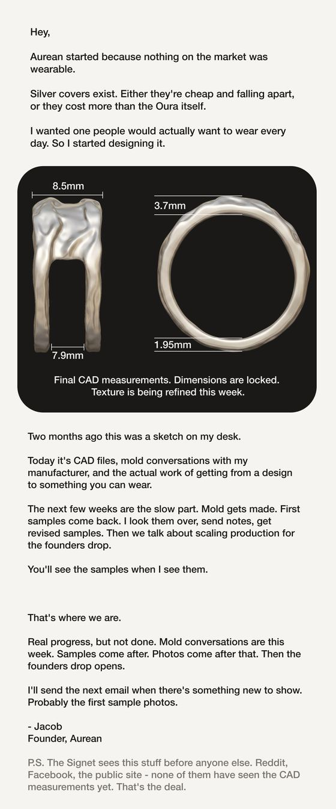
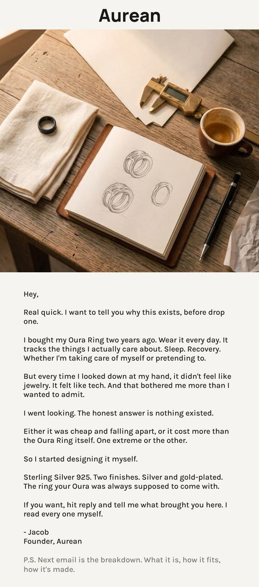
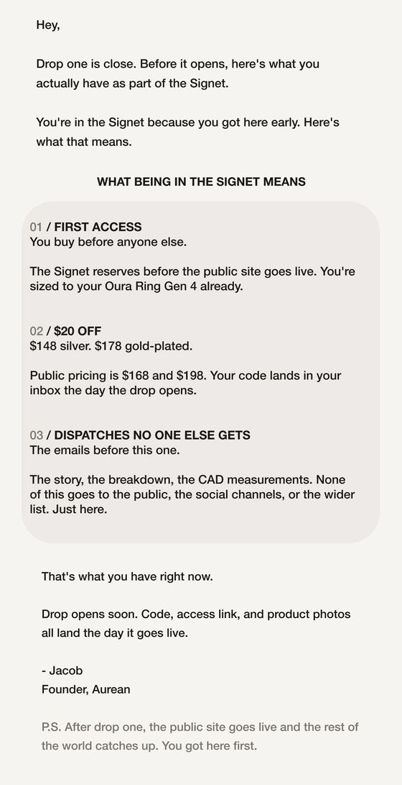

I built and ran the entire email program for a jewelry brand I founded. The list, the campaigns, the flow architecture, and the sending infrastructure underneath all of it.
Every number here was exported from the Klaviyo account before it closed.
No audience, no ad spend, no seeding. The list was built on organic writing: posts in Reddit and Facebook communities that earned 200,000+ views, one of them reaching 120,000 on its own.
Readers landed on a password-protected Shopify storefront and left an email to be told when it opened.
It's a small list and it behaved like one. Engagement on a hand-built organic list runs well above a paid-acquisition list of the same size, and everything below should be read that way.
Every subject line, every word of body copy, every CTA.
| Campaign | Sent | Open | Click |
|---|---|---|---|
| Pricing + Event + Socials — "The cloak is real" | 356 | 53.4% | 6.7% |
| Announcing July Pre-Order | 343 | 53.6% | 2.0% |
| Founders List Samples Shipped | 362 | 51.7% | 1.7% |
| Gen 5 Survey | 345 | 34.2% | 11.3% |
| CLOAK IS LIVE — launch day | 359 | 46.0% | 5.6% |
| All seventeen | 6,089 | 45.4% | 3.2% |
The two outliers taught me more than the average did.
"The cloak is real" paired a four-word declarative subject with preview text carrying three hard facts: pre-order date, event dates, pricing inside. Best combined open and click of the program.
The Gen 5 Survey inverted it. Lowest open rate of anything I sent, and nearly four times the click rate, because everyone who opened it had something specific to do.
Two of them below. The brand wound down in August, so some branches never shipped and are drawn as outlines.
Craft, story, product, transparency, incentive. The offer sits last on purpose. A pre-launch list has nothing to buy yet, so the first job is earning the right to sell, and email four exists specifically to say where the brand really was instead of implying it was further along.
Two decisions in there I'd make again. The order check repeats before every send rather than once at the top, so anyone who buys between email one and email two stops hearing about their cart immediately.
And the last branch splits on list membership. A founding waitlist member who abandons has a different reason than a stranger who abandons. They were never going to get the same email.



I set up the sending domain and its authentication myself. SPF, DKIM and DMARC verified in DNS, consent capture at signup, one-click unsubscribe, central suppression.
| Spam complaint rate, whole program | 0.07% |
| Delivery rate | 99.7% |
| Bounce rate | 0.3% |
| Hard bounces, list lifetime | 1 |
Two complaints across 6,089 sends. The threshold I built the alerting around was 0.1% and it never came close.
Aurean wound down in August 2026. The unit economics never worked: manufacturing cost and the price the product had to carry never reconciled, and no amount of email was going to fix that.
The program did what it was built to do. A list from nothing, mid-forties open rates held across seventeen sends, a clean sending reputation, and a flow architecture I'd build the same way again.
The lesson was about sequencing, not copy. I built a full lifecycle before I'd validated that anyone would pay what the product required.